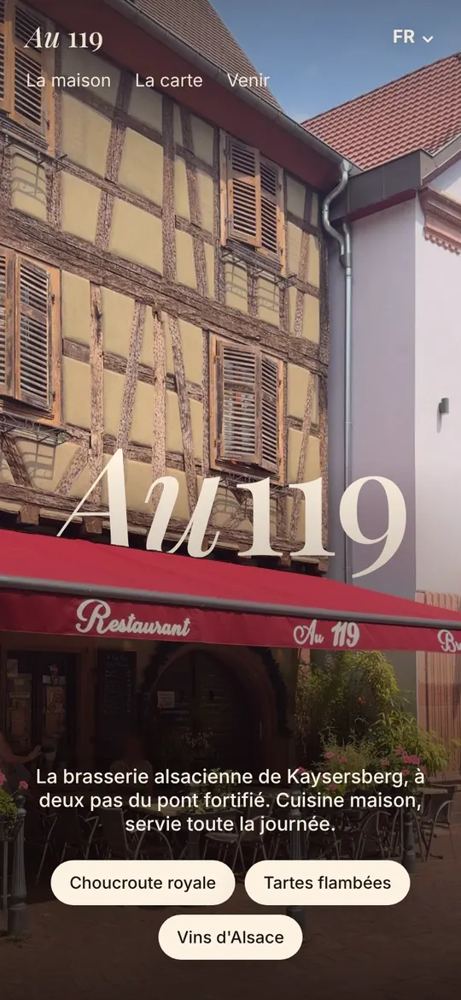
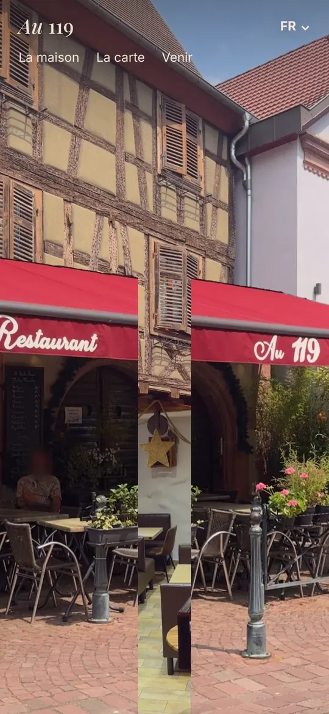
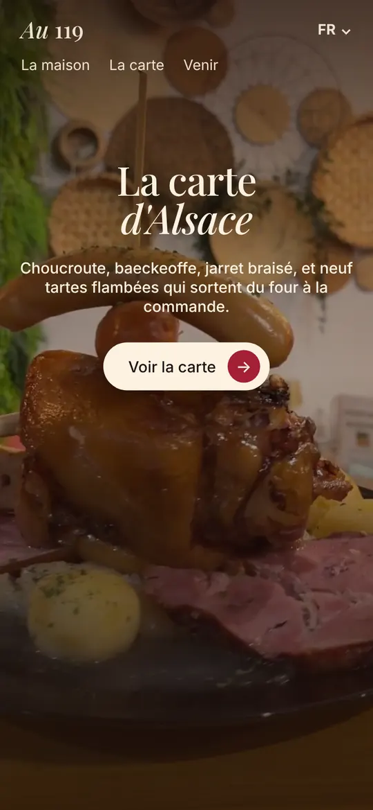
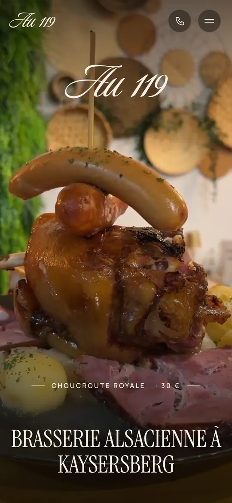
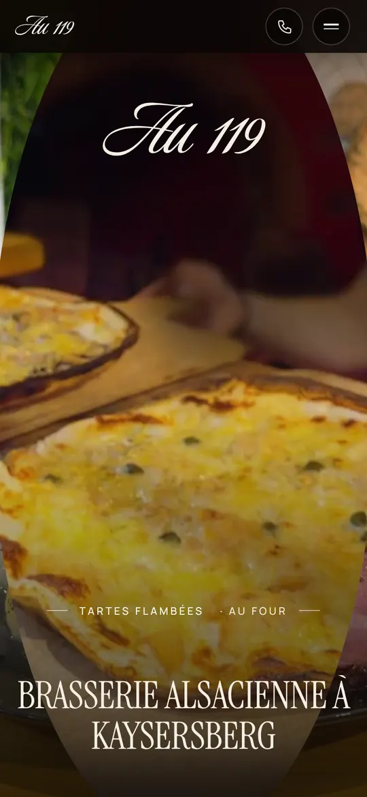
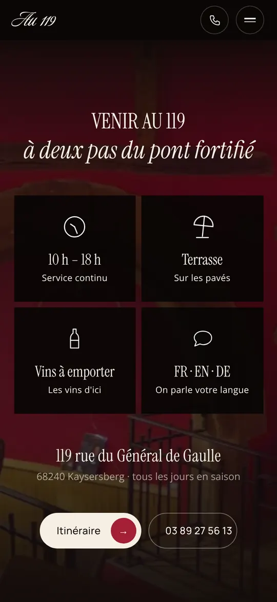
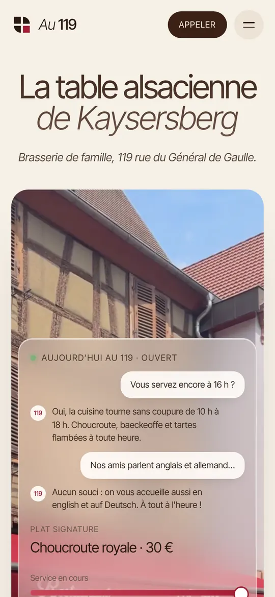
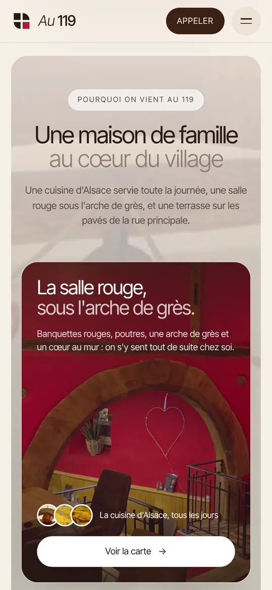
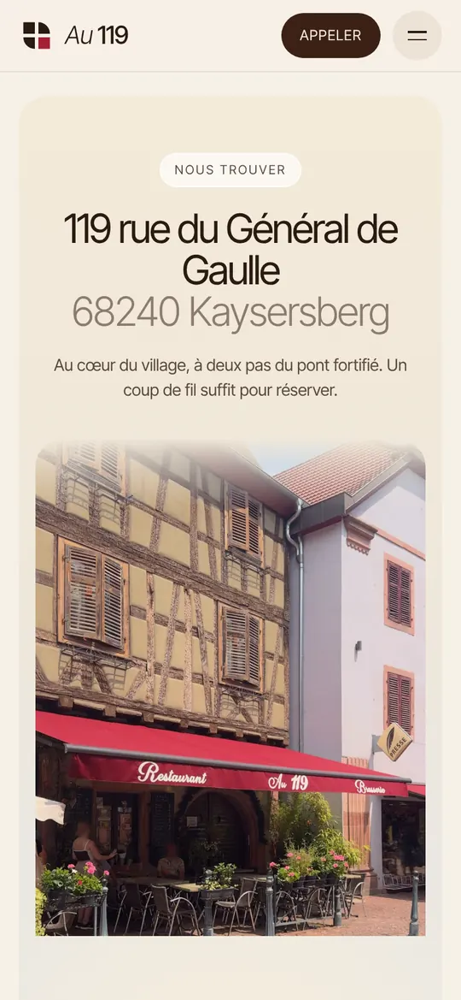

Au 119 · Kaysersberg
Le haut de page et deux ou trois sections de chaque piste, en vrai et animés, avec les photos et films du 119. Ouvre-les sur ton téléphone et fais défiler.
Kaysersberg au soleil couchant, en calques : le nom se glisse derrière les toits, on traverse les vignes, on descend jusqu'au store rouge du 119 et on entre dans la salle. Puis la carte et les plats en cartes-photos qu'on fait défiler au doigt.



Les plats d'abord, sur fond sombre : trois films plein écran qui s'ouvrent en ellipse au défilement (choucroute, tarte flambée, cocktails), puis la carte en images et les infos pratiques.



Clair et chic : grand titre, une carte vidéo de la façade avec un panneau en verre « Aujourd'hui au 119 » qui répond aux questions, des cartes en verre et l'heure d'ouverture en direct.


